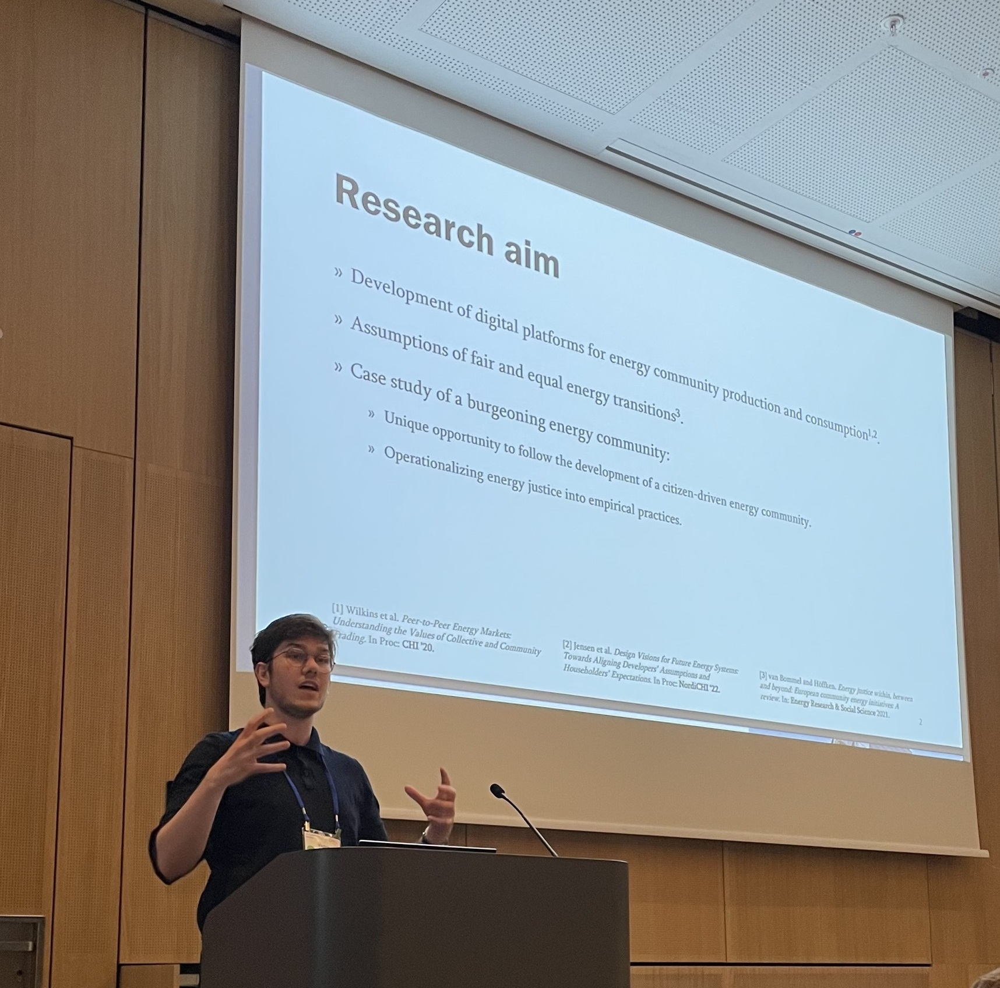

Victor Vadmand Jensen
Research assistant @ Aalborg University


My name is Victor, and I am a research assistant in the Human-Centered Computing research group at Aalborg University.
I study how we can design for future technologies in responsible ways.
I have a Bachelor of Science in Techno-Anthropology, and a Master of Science in IT Design and Application development.
My interests are concerned with ethics in and of technology development, designing future technologies, as well as qualitative and quantitative studies of Human-Computer Interaction.
On this website, you can read a little about what I do, why I do it, and what I am currently working on.
Want to talk about my work, or perhaps discuss collaborating? Send me an email!

Publications
Jensen, V. V., Laursen, K., Jensen, R. H. & Smith, R. C. 2024. Imagining Sustainable Energy Communities: Design Narratives of Future Digital Technologies, Sites, and Participation. In . In Proceedings of the CHI Conference on Human Factors in Computing Systems (CHI ’24), May 11–16, 2024, Honolulu, HI, USA. ACM, New York, NY, USA. DOI: 10.1145/3613904.3642609.
Jensen, V. V. & Lindrup, M.. 2024. Reclaiming Post-growth Energy Communities: Tensions in AI Systems Design. In . CHI Conference on Human Factors in Computing Systems @ "Post-growth HCI: Co-Envisioning HCI Beyond Economic Growth", May 11–16, 2024, Honolulu, HI, USA. ACM, New York, NY, USA.
Jensen, V. V, Sørensen, T. H., Kristensen, A. Ø., and Eriksen, J. 2023. Danish Citizens' Expectations for mHealth Prescription. In 33rd Medical Informatics Europe Conference, MIE 2023. IOS Press. DOI: 10.3233/SHTI230174.
Jensen, V. V. & Jensen, R. H.. 2023. Exploring Values of Energy Justice: A Case Study of a Burgeoning Energy Community. In Extended Abstracts of the 2023 CHI Conference on Human Factors in Computing Systems (CHI EA ’23), April 23–28, 2023, Hamburg, Germany. DOI: 10.1145/3544549.3573864.
Jensen, V. V., Pedersen T. & Kloppenborg, S.S. (2022, November 28-29). The Role of Relatives in E-governance Access Among Elderly Citizens: Vignettes from the Danish Covid-19 Vaccination [Paper presentation, based on peer-reviewed abstract]. Welfare After Digitalization, Copenhagen, Denmark.